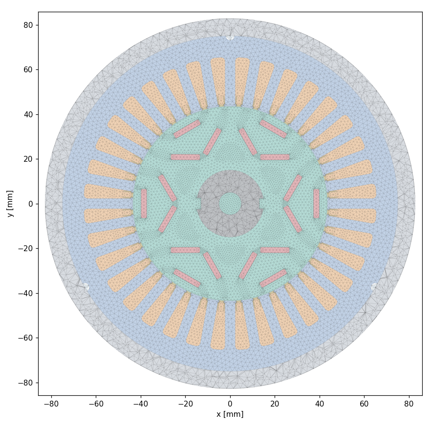
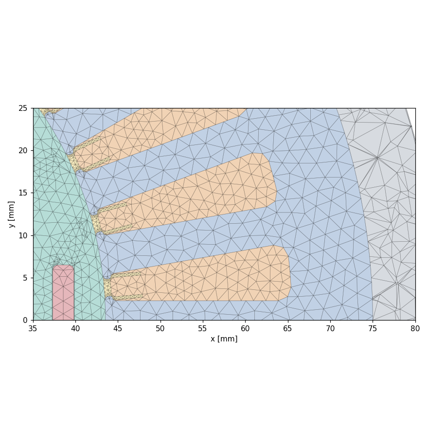
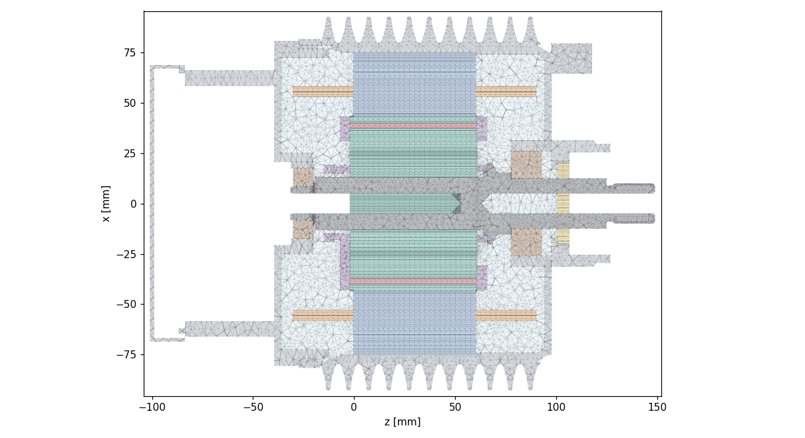
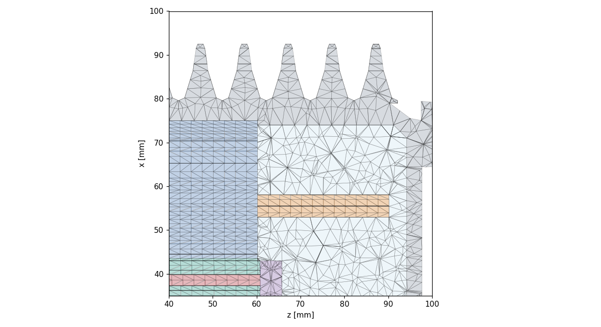
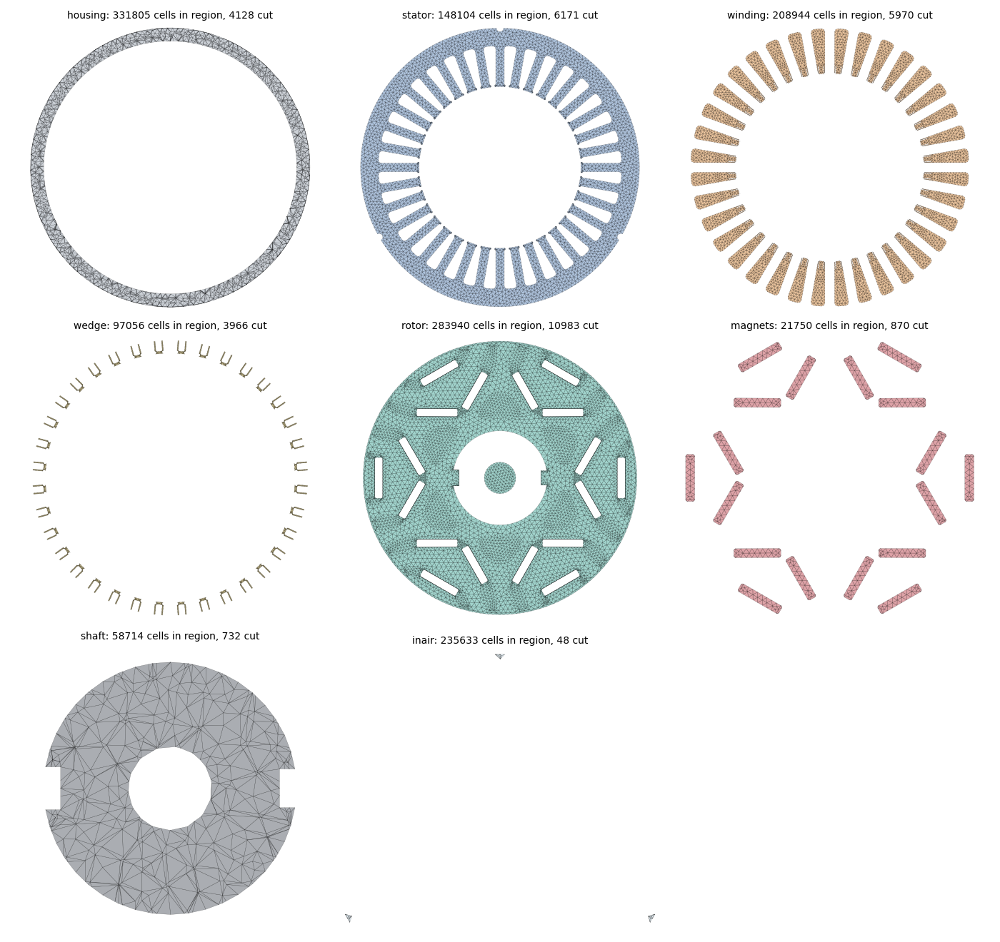
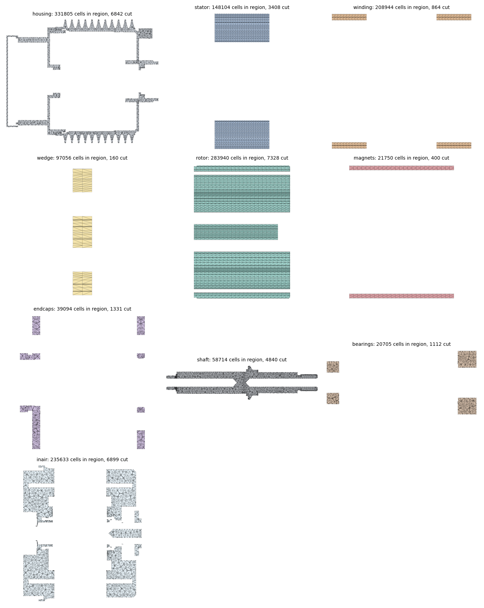

Mesh
Every meshing route tried and why it failed, and the final non-conformal per-region mesh with quality and interface tables.
Routes tried
| Route | Outcome | Why it failed |
|---|---|---|
| gmsh conformal tet, CAD housing (Delaunay / HXT) | failed | PLC segment-facet intersection on the dirty CAD (tori under 0.05 mm2, fin B-splines, 0.07 mm circle offsets); the 3D result of per-region diagnostics was void (0 tets) |
| fuse regions / fallback cap and gasket prisms | failed | housing fuse fails in OCC or loses 370 cm3; 2D fails on inverted cones |
| per-part CAD defeature (OCC) | impractical | calls hang (>20 min per 15 faces) or delete the solid; shaft 51/53 only |
| snappyHexMesh from per-region STLs | dropped | closed per-region STLs overlap on shared faces; 762 k free-standing zone faces; 8 M cells at levels 3 |
| gmsh conformal with SIMPLIFIED housing | still PLC | source unknown at that time |
| FINAL: non-conformal per-region mesh + prism extrusion | works | each region meshed alone; stator, rotor, winding, wedge, magnets as z-prisms from one 2D mesh; non-conformal coupling |
Final route
S7 Mesh (MESH agent, 2026-10-22/23)
- Solids mesh
u666_mesh.py --solids(H 2.5, Delaunay 3D, 1 thread). gmsh failures on the dirty CAD, in order, and fixes: - 20:45 2D "1D mesh not a closed loop" on a 0.2 mm2 torus sliver at the terminal-box gasket rim (z -85). Compound retry did not help. Fix (geo): gasket (subset tag 74) shrunk 1.5 % in x/y about its centre (GASKET_SCALE; housing -0.44 cm3).
- 21:53 2D hang on a housing B-spline lug face (1428, x -90 y 24 z -5): curvature sizing (10) makes its curves cross. Fix: MeshSizeFromCurvature 0 (env CURV). Face meshes at ~H.
- 22:11 3D overlapping facets: the terminal-box envelope cylinder r 72.61 grazed a cone on the box outside. Fix (geo): the box envelope is cut by the housing and only the interior piece is kept (cut ~6 min).
- 22:38 3D overlapping facets at the rotor OD: gap annulus r 42.68 vs lamination OD dips r 42.70..42.88. Fix (geo): annulus r 42.6 (pocket tops 42.35) FUSED with the lamination.
- 23:07 3D "PLC Error: segment and facet intersect" (no location). Seen: 1D crossings of two circles 0.07 mm apart at the shaft/rotor rear end (shaft internal faces from lower-priority overlaps), 2-4 invalid triangles on fin and torus faces. Tried proximity sizing (Distance/Threshold balls at close CAD vertices, PROX 1.5): 1.74 M nodes, still PLC + 0.065 deg facet folds at the gasket (AngleToleranceFacetOverlap 0.01 set). PROX now off by default.
- 00:17 new
scripts/u666_fuse.py: fuses each region's pieces and re-glues with one fragment (~30 min) onu666_geo_raw.brep. Housing fuse fails in OCC ("Courbes non jointives"); one-by-one fusing lost 370 cm3 -> never fuse the housing. Endcaps fuse (cap + nut) left a dangling face -> skipped. - 01:47-02:35 shaft fused (u666_fuse) -> 2D ok, 3D still PLC. Invalid-triangle surfaces (fins every 66 surfaces, cap torus) re-meshed by mesh.py with MeshAdapt + a finer size: fixed, PLC remained. Per-region 3D test was invalid (a discrete msh gives 0 tets). HXT (ALG3D 10) also fails.
- 02:35 gasket dropped -> the terminal box opens to the outside (11 000 mm2 leak): the gasket IS the seal. Reverted.
- 09:17 gasket+cap+cover fused before the fragment (volume kept): leak 0, closure exact; 2D fails on an inverted torus (-0.0018 mm2) and cones (-1404 / -32 mm2) at x -55..-30 y -52..-35 z -86..-41. mesh.py now defeatures degenerate skin faces (worked for 1 face, shared faces unchanged) and fuses same-region pairs on a failure (worked once); the next inverted cone could not be defeatured.
- 12:11 FALLBACK (assumption + calibration knob): cap 114 + gasket 74 replaced by extruded profiles (walls = cap section z -88 over z -90.5..-83.5, overlapping the cover = seal; lid = section z -91.5 over CAP_LID_Z0 -93.55..-90.5, thickened to keep 53.3 cm3; screw bosses dropped), fused with cover 64. Isolated test: 0 tiny faces, fuse 84 s. Chain geo -> mesh running; result pending (see handoff/u666_mesh_handoff.md).
- 12:33 cap-fallback chain (DEFEAT agent check): geo OK (inair-air 0 mm2, closure exact 360000 cm3), mesh --solids FAILED again: 3D "PLC Error: segment and facet intersect".
- 13:00-15:50 DEFEAT agent, per-part CAD defeature (user decision 12:15),
scripts/u666_defeature.py(pre-pass subset.brep -> subset_df.brep,u666_geo.py --df): - Inventory:
results/u666/defeature_inventory.md(fillets r < 1.95 mm with arc span <= 0.55 pi, cone chamfers < 2 mm, holes d < 3 mm). Housing 39/64: ~350 blends r 0.2-1.0, ~130 chamfers, 8 holes d 2.5 (64); shaft 53 faces; screws, endcaps small. Threads: none modelled in the CAD. Wedges and lip seal kept exact. ~870 B-spline faces of housing 39 not classifiable (fins/blends). - Result: OCC defeature is impractical on this CAD. Shaft 51/53 faces (dV +0.17 cm3); small housing parts 40/65/66/119 mostly fail (2/14, 2/14, 0/4, ~19/47); screws/endcaps mostly OK. Housing 39: 200 s for one 15-face call, then > 20 min hang on the next; cover 64: 408 s per 15-face call, one 284-face call > 30 min with no end.
- Problems met: a failed defeature call can delete the input solid (fixed with a backup copy per call); bulk occ.remove is O(N^2) here (export now uses OCCExportOnlyVisible).
- Main decision 15:46: stop the defeature, switch to snappyHexMesh multi-region from the gmsh 2D surfaces (strategy A). The --df geo path stays in the code, unused.
- 15:55 strategy A:
u666_mesh.py --solids --stl(2D only, retries as before) ->mesh/u666/stl/<region>.stl+skin.stl+volumes.json;scripts/u666_snappy.sh->~/cfd/u666_snappy(blockMesh H 2.5 mm, region surfaces = faceZone + cellZone (mode inside), skin = outside patch -> defaultFaces, mesh built in mm and scaled to m);u666_prep_base.shnow accepts the snappy case dir. - 16:00-16:55 snappy (strategy A): the first run (levels up to 3, nCellsBetweenLevels 2) reached 8 M cells and 8/9 GB of WSL RAM, so it was killed. The coarsened run (levels (1 1), wedge/seal 2, 2.4 M cells) stalled > 25 min after "762458 free-standing zone faces": the closed per-region STLs overlap on every shared face, which fragments the zones (OF12 has one insidePoint per surface, so per-interface STLs are not workable with 28 housing / 18 magnet pieces). Dropped.
u666_snappy.shand the--stlexport stay in the code, unused. - 17:00 switch to the simple housing (S7b):
U666_HOUSING=simpleinu666_geo.py(CAD version saved asscripts/u666_geo.py.bak_cad). - housing = 8 solids of housing_simple.brep; screws, cap fallback and plugs skipped; no cavity envelopes (the simple housing is closed, so inair = the enclosed complement).
- Fix 1: the CAD lip seal against the simple hub bore broke the fragment (body left uncut, +694 cm3 closure). The seal is now a plug primitive: disk r 21, z 100.5..106.5; housing and shaft claim first; seal 4.9 vs CAD 2.9 cm3 (KNOB). After this fix: closure exact, inair-air 0.
- Fix 2: without envelopes the pocket air merged into inair (rpocket 6.1 vs 48.6 cm3), so an rpocket cylinder r 42.45 over the rotor z (lowest priority) was added.
- The 3D mesh still fails with PLC (simple housing, closure exact, leak 0). CORRECTION: the per-region and cumulative DIAG passes in
u666_mesh.py(Mesh.MeshOnlyVisible) produced 0 tets, so their 'ok' results are VOID and the PLC source is still unknown. Set DIAG=0 or fix the visibility (surfaces/curves must be visible too) before trusting it. - Region volumes, simple housing (cm3): housing 1048.7 (CAD run 1109.8), inair 983 (CAD 1402.7, simple cover interior differs), seal 4.9; all others unchanged (stator 477.33, slot 221.58, endw 107.97, rotor 244.84, magnets 36.55, shaft 89.38, bearings 32.16, endcaps 36.77, wedge 9.52).
S8 Base case and energy test — pending
S7 b Simplified housing, backup (HSIMPLE agent, 2026-10-23)
- Purpose: fallback for the dirty housing CAD (B-spline fillets break gmsh).
scripts/u666_housing_simple.py->mesh/u666/housing_simple.brep+.json(5 s). Planes, cylinders and cones only; no fillets. CALIBRATION KNOB: dictKin the script (fin profile, tip/valley radius, skirt thickness, box thickness). - Measured from
subset.brep(subset tags 39 body, 40 front seat, 64 rear cover, 65 rear seat, 66 O-ring, 74 gasket, 114 terminal cap, 119 gland): face types/areas/bboxes + one y=0 section. The section is slow (225 s) because of B-splines. - Findings: fins are 11 CIRCUMFERENTIAL rings (not axial strips), pitch 10 mm, centres z -12.8..87.2, valley r 79.4-79.6, tip r about 93-94 (lugs reach 100). Stator fit bore r 75.0 over z -6.3..60.2, shoulder at 60.2 (r 74.0 beyond, to z 91.2). Front end wall z 94.2..97.7, hub to z 126.7 (bore 16.9/19.8/25.5), 3 bosses r 12 at r 72.5 to z 117.7. Rear socket bore r 78.4 over z -25.8..-11.3. Bearing seat bores: front r 26.0 over z 77.56..97.5, rear r 17.5 over z -31.2..-20.5 (same as the bearing annuli in
u666_geo.py). Rear cover: flange r 80.5 z -27.3..-39.5, floor z -36..-39.5, skirt r 66 to z -83.7 (thickness SOLVED = 7.56 mm to hit 269.6 cm3). Terminal box x -68.4..68.6, y -52.4..79.3, z -101..-83.8 (lid 2.0, wall 1.6 so volume = CAD 49.6 cm3). - Comparison (CAD | simple | diff):
- volume of the 8 parts: 1064.2 | 1042.6 cm3 | -2.0 % (body 714.3 | 693.9 -2.9 %, cover 269.6 | 269.6, box 49.6 | 49.0, front seat 18.6 | 19.0, rear seat 4.15 | 4.11, gasket 3.7 | 3.65, O-ring 2.97 | 2.1, gland 1.23 | 1.19).
- fin band skin (z -6..94, r > 78; CAD from
stl/skin.stl): 1616 | 1635 cm2 | +1.1 % (the fin tip r 92.5 is tuned down from the measured 93-94 to match the area; the same profile with tip 94 gave +9 %). - total outer skin (cavities filled): 2763 (skin.stl minus 26 cm2 shaft stub) | 2927 cm2 | +5.9 %. The excess is the terminal box: 273 cm2 vs 173 cm2 in skin.stl, which holds GEO's fallback cap and not the real cap. Without the box: +2.5 %.
- fit/seat (exact by construction, read back from the BREP): bore r 75.00 z -6.3..60.2; seat r 26.00 z 77.56..97.5; seat r 17.50 z -31.2..-20.5; end wall 94.2/97.7.
- Mesh test: gmsh 2D + 3D, H 2.5, 1 thread, 8 solids after fragment: 0 errors, 429 k tets, 21 s (
scripts/_h_meshtest.py, logmesh/u666/_hs_mesh.log). - Assumptions: the rear cover is axisymmetric (the real one has flats and cable pockets; the skirt thickness absorbs the mass). Lugs, feet, the 3 boss holes and the screws are omitted. Fin tips are circular. The O-ring is a rectangular ring (r 76.6..78.4). The terminal box is a hollow box with an open interior.
- Swap-in (NOT done;
u666_geo.pybelongs to DEFEAT): inu666_geo.pyreplacepick("housing","screws")(line 167; also drop "housing" and "screws" fromkeepat line 122) with the 8 solids ofhousing_simple.brep, imported at the same place and in the same frame. Remove the cap/gasket/cover fallback at line 185 (tags 74, 114, 64) and the plug logic at line 195 (no screw holes are left). Check the cavity annuli at lines 226-232 against the new walls: cover inner r 72.4, spigot r 76.6, socket bore r 78.4. Proposed env flag:U666_HOUSING=simple(defaultcad) selects the swap.
S7 c Mesh, route B non-conformal (MESH2 agent, 2026-10-23 18:30-21:40)
- What failed: the conformal one-shot 3D (tetgen "PLC: segment and facet intersect", no location; HXT fails too).
- Located with a surface-mesh check (
scripts/u666_surfcheck.py: edge-triangle crossings on the 2D mesh). - Cause 1: shaft r 15.03 vs rotor bore r 14.96 (press fit). The fragment leaves 0.07 mm shaft shells whose end arcs cross in the 1D mesh (z -2.2).
- Cause 2 (the one the PLC came from): rear bearing bore r 8.5 vs shaft r 8.47 at z -20.2. This leaves a 0.03 mm inair ring, and the 1.5 mm chords cut across the other circle (108 crossings).
- Dropped:
- fusing shaft pieces in the full model breaks conformity (131 faces lose their partner);
- cutting the rotor by the shaft in geo hangs the fragment (>90 min; env CUT_ROTOR_BY_SHAFT, off);
- transfinite matched circles (the arcs have different spans).
- Fix / route: OpenFOAM CHT does not need conformal interfaces.
- Each final region is meshed alone (
u666_mesh.py --solids --group G). Thin same-region pieces (2V/A < 0.2 mm) are fused (shaft, endcaps, wedge, housing). - Patches
<G>_to_<nb>come from the conformal brep adjacency. Fused faces that span two neighbours are split per triangle by the nearest partner triangle. - A 0.3 mm refinement box sits at the rear bearing bore.
- Assembly:
scripts/u666_assemble_nc.shgives mappedWall withmethod intersection(the OF12 AMI). - Result: 10 regions, 4.17 M cells in total. 7 of them pass checkMesh. inair, wedge and rotor fail on skewness only (85 / 200 / 5 faces, max 9.2 / 5.5 / 5.6).
- Interface areas: 23 pairs. 21 are within 1.3 %; endcaps-shaft is 3.7 % and endcaps-magnets 4.9 % (about 40 mm2 each, from the per-triangle split).
- Assumptions:
- the 0.03 mm rear bearing-shaft air ring is kept as inair, so the shaft-bearing heat path goes through air there (KNOB: close it in geo by setting the bearing bore to the shaft radius);
- the non-conformal AMI couples are assumed conservative; the energy test must confirm this.
S8 - nc base case + energy test (BASE agent, 2026-10-23/24) - GATE NOT YET MET
- Case
~/cfd/u666_etestfrom~/cfd/u666_base_ncviau666_make_case.py(dummy etest losses 128 W, adiabatic). Region names matched; no renaming needed. - Schemes: laplacian/snGrad
Gauss linear limited corrected 0.33(isotropic regions),uncorrected(anisotropic: stator, rotor, winding); nNonOrthCorr 1. Contact R unchanged (liner 1.67e-3, fit 2e-5/0.026, glue 1e-4/0.2, gap layers k_gap). - Fixes needed (all in make_case / new lib):
1. mappedWall intersection aborts "not geometrically similar": matchTolerance 0.5 added to every mapped patch (also 0.5 only needed for endcaps-shaft, centre offset 1.9 mm).
2. coupledTemperature gives NaN on uncovered nc faces (coverage 0, 5 pairs). New lib scripts/u666_build_ctnc.sh -> libcoupledTemperatureNC (copy; faces with sumKappaByDelta ~0 treated adiabatic). Type coupledTemperatureNC, libs in controlDict. Build once per machine.
3. Zonal Cv jump (rpocket air Cv 1007 vs rotor 460) blew up rotor (2000 K in 1 outer iter). RPOCKET now Cv = rotor Cv, rho scaled (rho*Cv of air kept).
4. Anisotropic winding (cylindrical, 1.12/185) DIVERGES in the outer coupling loop (T 1e6 within 20 outer its). WIND_ISO=1 (k = 1.12 all directions) is stable. Laminations anisotropic are stable (N=60).
5. Tolerant solver: GAMG DICGaussSeidel fine once 1-3 fixed.
- Result so far (WIND_ISO=1, 10 s, 60 outer its, NOT converged: "Not converged within 60 iterations"): stored 1.390 kJ vs injected 1.280 kJ = +8.6 %. Gate (+-1.5 %) not met; cause unknown (unconverged coupling vs real interface non-conservation). Interface coverage averages are 0.97-1.01 except endcaps pairs (0.82-0.97).
- Timing: setup (decompose+coupling) ~90 s; ~7 s per outer iteration (4 procs, 4.17 M cells). 10 s step with 60-100 outers = 7-12 min => ~45-70 s wall per simulated second. duty1 (300 s, dt 10) would be ~4-6 h even with winding fix; needs fewer outers (e.g. 10-20) or coarser region coupling.
S8 b - prism meshes + energy test (BASE2 agent, 2026-10-24) - GATE NOT YET MET (-8.7 %, cause located)
- Mesh:
u666_mesh.py --solids --group Gz-PRISM route (env EXTRUDE, default winding,stator,rotor,magnets,wedge): mid-z section of each zone volume -> per-(zone,z-band) union -> 2D fragment -> triangles x z-layers (DZ 2.5 mm; band ends closer than SNAPZ 0.5 mm merged, e.g. magnet/rotor 0.19 mm CAD steps). endw is an annular z-prism, so slot+endw stay one conformal winding mesh. Patch labels = nearest patch triangle of the old TET mesh (mesh/u666/tet_bak/, TETREF); CAD getClosestPoint/isInside mislabelled (untrimmed planes, holed cylinders). Patch areas vs CAD within 1 % (worst pair endcaps-magnets 5.2 %, unchanged tet side). - Cells: winding 209 k, stator 143 k, rotor 286 k, magnets 22 k, wedge 74 k (prisms) + tet regions 686 k = 1.42 M (was 4.17 M). checkMesh: stator skew 5.1 (1728 faces), wedge aspect 2255, inair skew 9.2 (unchanged).
- Volumes: slot 220.6 (CAD 221.6) cm3, stator 478.2 (477.3), rotor 245.5 (244.8), rpocket 53.2, magnets 36.5, endw 108.0.
- Run: adiabatic duty1 losses (1201 W), dt 1 s, nOuter 3, anisotropic winding (WIND_ISO unset): STABLE, no divergence.
- Balance (stored - injected)/injected: dt1/N3: -2.6 % @5 s, -5.7 % @20 s, -8.7 % @60 s; dt1/N10: -1.9 % @20 s. Series:
results/u666/s8b/ts_dt1_N3_60s.csv,eb_dt1_N3_60s.json(per-interface sums in iface_W). - Diagnosis: interface pair sums are ~0 except wedge|winding (-9 W) and stator|wedge: with STATOR_ISO=28 the stator|wedge pair loses -88 W at 20 s (stator -73 W, wedge -15 W: both sides lose). With the anisotropic stator the same loss shows as a stator internal residual (-109 W @60 s; the anisotropic explicit-T split hides it from wallHeatFlux). Cause: sliver prisms in the wedge mesh, 2-5 um high, along r 43.53 (two CAD arcs 43.530/43.535: gap ring vs slot-opening pieces / tooth tips); kappa/delta there is huge and the AMI coupling is not conservative. Union per zone, fuzzy boolean (BOOLTOL 0.03) and 2D algorithms 1/5/6 did NOT remove them.
- rho*Cv: consistent (case_props rhocv = physicalProperties; rpocket keeps air rho*Cv with rotor Cv). Region order (winding first) made no difference.
- Timing: ~1.1 s per outer iteration (4 procs, 1.42 M), setup ~80 s. dt 1/N 3: 60 s simulated in 352 s wall (incl. setup) = ~4.5 s wall per s sim (~3.3 s excl. setup); N 10 = ~11 s/s.
- Assumptions: prism sections at mid-z of each volume (rpocket piece 469 is 6 % off a prism, rotor 345/rpocket 389 1 %); wedge SIZE changed to H*0.2.
S8 c - wedge tooth-tip fix + energy gate (BASE3 agent, 2026-10-24) - GATE MET (-1.14 % at 60 s)
- Cause (probe of the mid-z sections): the wedge ring piece was annulus 43.53..44.0 minus stator, i.e. a full circle at r 43.530 (rotor side) plus 36 tooth-tip arcs at r 43.535 (4.904 mm, tips at 10k +- 3.226838 deg). Under every tip that left a 5 um x 4.9 mm strip of wedge = the sliver prisms.
- Fix (
u666_mesh.pyprism route, env TIP="43.535,3.226838,10,43.53", TIP=0 = off): wedge section = CAD wedge + slot-opening sectors with the inner arc cut at the EXACT tip radius 43.535 (disk cut); flanks / r 44 arcs stay the conformal stator curves from geo. The strip was the only rotor-stator path, so the rotor arc (r 43.53) is now split at the 72 tip angles and the tip faces become a NEW pair rotor_to_stator / stator_to_rotor (10687.5 / 10688.4 mm2, 0.009 %); rotor_to_wedge / wedge_to_rotor 5873 / 5874 mm2. The rotor-tip and wedge-rotor couplings bridge the 5 um radial offset (43.530 vs 43.535) via mapped AMI, the same as before. Not merged into the slot. - Also fixed: fragment of a single fused section (stator) returned an empty map -> skipped when there is only 1 face.
- ASSUMPTION: wedge volume 9.61 -> 9.52 cm3 (-0.9 %, the 5 um strips removed); seal unchanged 4.91 cm3. Rotor/stator gap contact now direct (no 5 um wedge k 0.2 layer in series; that layer had R ~ 2.5e-5 m2K/W, negligible).
- Remeshed wedge (97.1 k prisms, was 74.3 k), stator (148.1 k, sections now fused: 1 face), rotor (283.9 k). Old meshes in
mesh/u666/prism_s8b/. Logsmesh/u666/s8c_<G>.log. Total 1.446 M cells. - checkMesh: stator and wedge now Mesh OK (skew 5.1 and aspect 2255 gone); only inair skew 9.2 (unchanged, tet).
- Pair area mismatch: stator_to_wedge 6269 vs 6381 mm2 (1.8 %, labelling at the CAD-wedge / tooth corner r 44.5); worst overall still endcaps_to_magnets 5.2 % (unchanged).
- Energy test, adiabatic duty1 (1201 W), dt 1 s, nOuter 3, anisotropic winding + stator: -1.05 % @5 s, -1.11 % @20 s, -1.14 % @40-60 s (plateau). Series
results/u666/s8b/ts_s8c_dt1_N3_60s.csv,eb_s8c_dt1_N3_60s.json; plotresults/u666/s8b/balance_s8c_dt1_N3.png(S8b plot:balance_s8b_dt1_N3.png). - Per-region rate residuals at 60 s: stator -0.7 W (was -109 W), rotor +0.6, winding -7.0 W, others ~0.
- Interface pair sums at 60 s: stator|wedge +0.03 W of 10.9 (0.3 %), rotor|stator 0.00 of 10.4, rotor|wedge 0.00 of 5.6, stator|winding -0.72 of 662 (0.11 %), housing|stator 0.05 of 190, housing|inair 0.08 of 79. FAIL the strict 1 %: wedge|winding -1.85 of 25 W (7 %), inair|winding -1.1 of 104 (1.06 %), and sub-watt pairs (endcaps|shaft, bearings|housing, magnets|rotor, inair|rotor, 0.3-0.6 W each). All winding pairs lose on the winding side -> likely the anisotropic-winding wallHeatFlux / explicit split (as the stator showed before), together with the -7 W winding residual. Total missing ~14 W = 1.2 % of the loss.
- Gate met with N 3 at dt 1, so the dt 0.5 / more-outer test was not needed.
- Timing: 60 s sim in 352 s wall incl. ~80 s setup = 5.9 s wall per s sim (4.5 excl. setup). Note: the S8b line "352 s = 4.5 s/s incl. setup" was mis-computed (it is 5.9).
Per-region cells and quality (checkMesh)
| Region | cells | result | max skewness | note |
|---|---|---|---|---|
| endcaps | 39094 | OK | ||
| housing | 331805 | OK | ||
| inair | 235633 | check | Max skewness = 9.2387839, 85 highly skew faces detected which may impair the quality of the results | |
| magnets | 74964 | OK | ||
| rotor | 1807635 | check | Max skewness = 5.5627197, 5 highly skew faces detected which may impair the quality of the results | |
| shaft | 58714 | OK | ||
| stator | 418712 | OK | ||
| wedge | 507797 | check | Max skewness = 5.4931813, 200 highly skew faces detected which may impair the quality of the results | |
| winding | 675089 | OK |
rotor and wedge: skewness above the 4 limit on a few faces; accepted, energy gate met.
Interface pair areas
| Pair | area A [mm2] | partner [mm2] | mismatch [%] |
|---|---|---|---|
| bearings_to_housing | 3553.7 | 3552.7 | 0.028 |
| bearings_to_inair | 4011.0 | 4005.8 | 0.129 |
| bearings_to_shaft | 1755.3 | 1770.5 | 0.866 |
| endcaps_to_inair | 14626.1 | 14625.8 | 0.002 |
| endcaps_to_shaft | 1181.9 | 1226.1 | 3.737 |
| endcaps_to_magnets | 651.1 | 682.7 | 4.859 |
| endcaps_to_rotor | 6033.5 | 6012.5 | 0.348 |
| housing_to_inair | 80207.7 | 80207.7 | 0.000 |
| housing_to_wedge | 1080.2 | 1080.7 | 0.043 |
| housing_to_stator | 28262.6 | 28263.2 | 0.002 |
| inair_to_winding | 50773.1 | 50774.8 | 0.003 |
| inair_to_shaft | 5568.0 | 5498.8 | 1.244 |
| inair_to_wedge | 799.5 | 801.4 | 0.229 |
| inair_to_stator | 14653.5 | 14731.6 | 0.533 |
| inair_to_rotor | 4046.9 | 4046.3 | 0.015 |
| inair_to_magnets | 486.9 | 488.3 | 0.286 |
| magnets_to_rotor | 33926.7 | 33962.6 | 0.106 |
| rotor_to_shaft | 8078.3 | 8096.8 | 0.230 |
| rotor_to_wedge | 16560.2 | 16560.6 | 0.002 |
| shaft_to_wedge | 658.0 | 659.1 | 0.153 |
| stator_to_winding | 104747.3 | 104747.5 | 0.000 |
| stator_to_wedge | 16930.2 | 17035.7 | 0.623 |
| wedge_to_winding | 37015.7 | 36898.5 | 0.317 |
Mesh cross-sections




| Region | cut triangles, radial | cut triangles, axial |
|---|---|---|
| bearings | 1112 | |
| endcaps | 1331 | |
| housing | 4128 | 6842 |
| inair | 48 | 6899 |
| magnets | 870 | 400 |
| rotor | 10983 | 7328 |
| shaft | 732 | 4840 |
| stator | 6171 | 3408 |
| wedge | 3966 | 160 |
| winding | 5970 | 864 |
One picture per region


Generated 2026-10-24 14:23 by scripts/u666_site.py from results/u666/steps_log.md and the case data.